Meet the Team Behind THE NAT
NAT Champions
The founders, partners, creative collaborators and stewards driving THE NAT's mission forward.
Gui Christ, Kent Andreasen, Kyle Weeks
THE NAT Founders

Gail Gallie
Founder & Project ChairExtensive background in global advocacy and campaigning — from CEO of Fallon and stints at the BBC and Comic Relief, to co-leading the UN Global Goals Campaign and co-founding Project Everyone with Richard Curtis and Kate Garvey. Now a driving force behind Goals House, mobilizing coalitions to develop powerful, cross-platform campaigns.
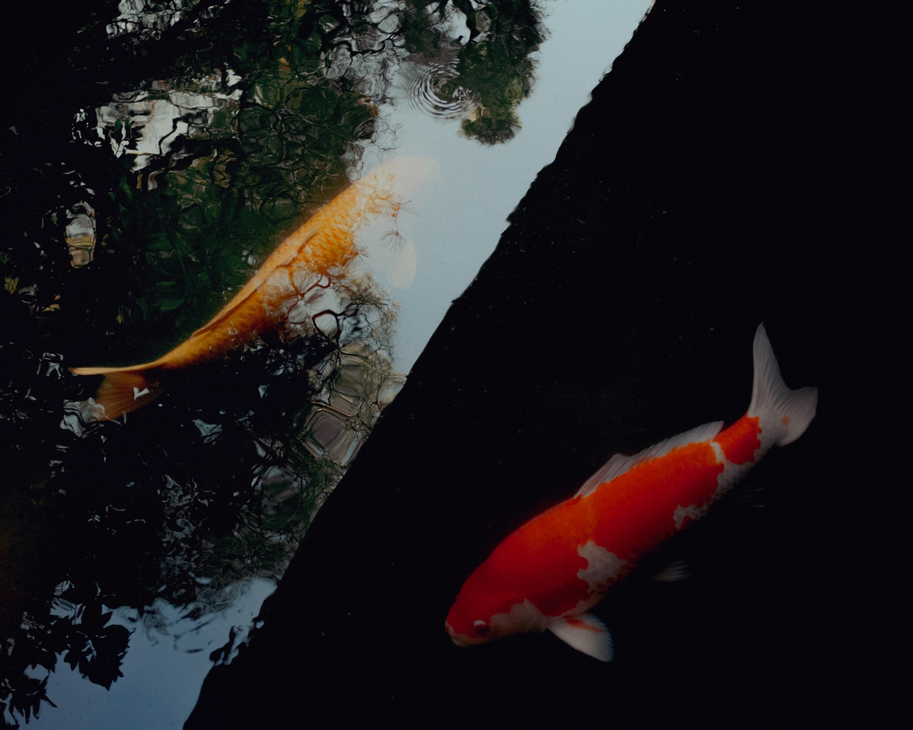
Jay Lipman
Co-Founder, Finance and InvestmentsA pioneer in sustainable investment, having founded Ethic, a data and technology platform that aligns investment portfolios with environmental values — most recently through his work with Nature2 to make nature an asset class.

Catherine Kimmel
Co-Founder, Talent and PhilanthropyA seasoned connector who has worked directly with Mikhail Gorbachev, Bono, Pharrell Williams, Al Gore and José Andrés on their impact strategies and campaigns. Co-founded The Artemis Agency and leads talent and philanthropy strategy for THE NAT.

Amy Bryson
Co-Founder, Campaign and Overall ProjectAn award-winning marketer with 20 years’ experience across 50+ global brands, from MINI to Starbucks. Focused on bringing radical creativity to THE NAT and communicating messages of critical importance in ways that resonate with the masses.

Rachel Muscat
Co-Creative DirectorAn international brand builder and trend forecaster who has worked with adidas, Yeezy, and is co-founder and CEO of Humanrace with Pharrell Williams. Across 20 years she has shown how high-end product and sustainability can coexist — now leading THE NAT’s mission to make nature cool in the consumer consciousness.

Al MacCuish
Co-Creative DirectorFounder and Chairman of Sunshine, part of The Independents Group, and one of the luxury industry’s leading experts on brand transformation and storytelling — with projects including Augustinus Bader, Balmain, BBC Earth, Calvin Klein, Gucci and Nike.
NAT Family
Sophia Li
Sustainable Fashion PartnerJournalist, founder of STEWARD Media, UN Human Rights Champion, Earthshot Prize correspondent, Vogue.com founding team.

Hari Balasubramanian
Conservation PartnerFounder of EcoAdvisors and EcoInvestors Capital; guided $6B+ in financing for species/forest/ocean protection; former Conservation International.
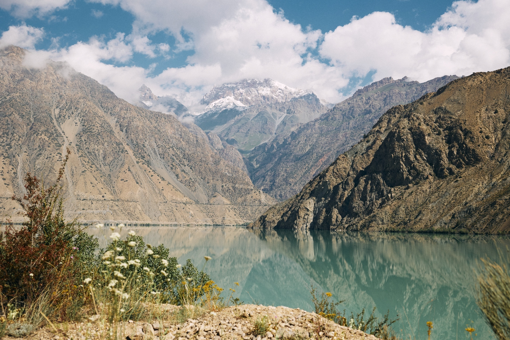
Steve Toal
Communications PartnerGlobal communications and marketing specialist with 20+ years’ experience working at the intersection of climate, business, sustainability, and culture; shaping strategies for international organizations to communicate with greater clarity, influence and impact.

Samata Pattison
Culture PartnerFounder & CEO of BLACK PEARL; sustainable fashion partner to the Academy of Motion Picture Arts and Sciences; TEDx speaker; VOGUE Business “Champion of Change.”
Gary Gersh
Music PartnerMusic industry executive; signed Nirvana, Sonic Youth, Counting Crows at Geffen; President of AEG Global Talent & Touring.
THE NAT MOTHERSHIP
Seven brilliant women who provide ongoing support and advisory to us.
Pat Mitchell
First woman president of PBS and of CNN Productions, and co-founder and Editorial Director of TEDWomen.
Ryan Shadrick Wilson
Former food attorney turned Chief Strategy Officer of Michelle Obama's Partnership for a Healthier America, now founder of Boardwalk Collective and Senior Advisor chairing the Milken Institute's Feeding Change programme.
Andrea Egan
Nearly two decades leading global climate and nature portfolios at the UN Development Programme, and a board member of Open Planet.
Sophia Li
Award-winning journalist and filmmaker, host of Meta's Climate Talks podcast, UN Human Rights Champion and co-founder of the STEWARD initiative.
Kristie Cole
Managing Partner at Somerset Strategies, following senior roles as Vice President of Major Giving at UNICEF USA and Chief Development Officer at Georgetown's School of Foreign Service.
Jess Murphy
Principal at S2G Investments with 13-plus years in venture capital and private equity, having helped grow the firm to $2.5 billion in assets under management and co-founded the S2G Summit.
Creative Collaborators
The agencies, studios and creative minds shaping how THE NAT shows up in the world.
Project17
Helps brands take real action on urgent planetary challenges through creativity-led brand strategy, education, and disruption campaigns.
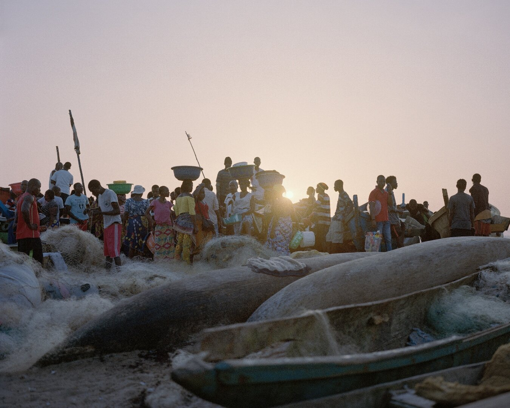
The Artemis Agency
Works at the intersection of entertainment and philanthropy, powering funding and policy change initiatives.
Sunshine
Strategic consultancy/creative agency (part of The Independents Group) at the intersection of brand and entertainment.
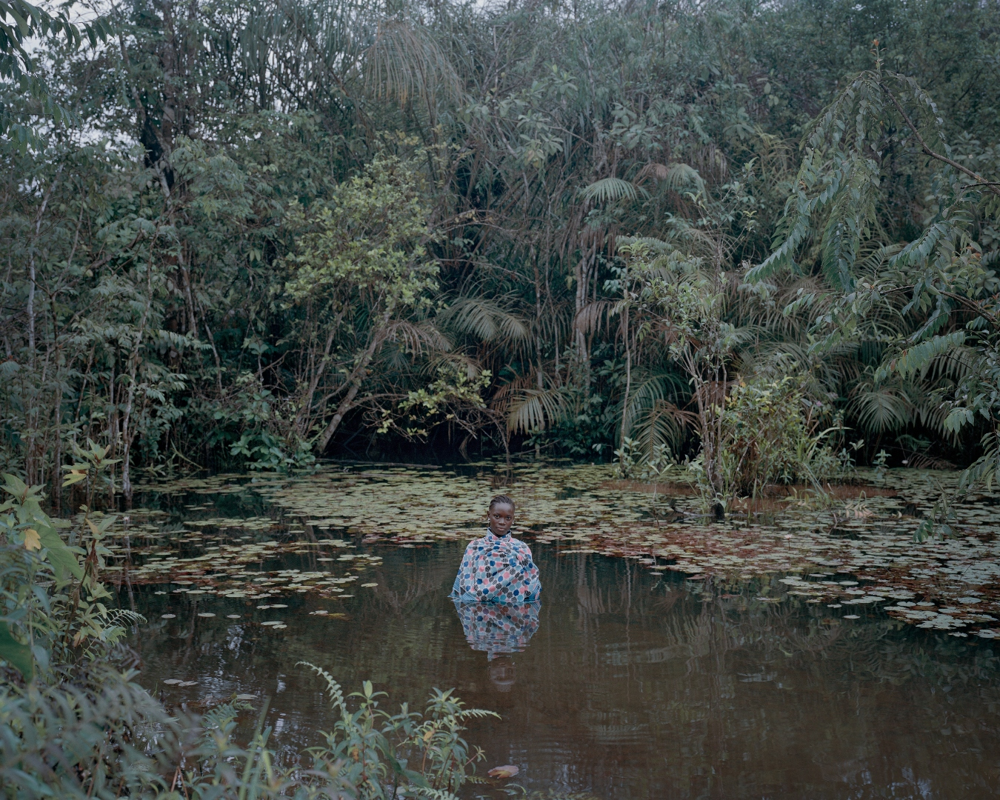
Open Planet
Founded by Colin Butfield and Jonnie Hughes; content studio for planetary change (Ocean with David Attenborough, Breaking Boundaries).
INCA
360-degree creative production agency leading THE NAT's event production; “Recycle, Reuse, Repurpose” ethos.
EcoAdvisors
Certified B Corp building sustainability programs, advising governments and corporations.
Planetary Guardians
A collective of scientists, Indigenous leaders, activists, and innovators safeguarding Earth's life-support systems via the planetary boundaries framework.
Pearl Academy
Creative education institution (fashion, design, media, business).
Sounds Right
Music initiative establishing NATURE as a credited artist, directing streaming royalties and corporate donations to conservation and restoration.
Studio Prince
Immersive arts studio for live experience — video projection, sound, and installation work for the Eden Project, Es Devlin, and Brian Eno.
Sophie Hunter Studio
The practice of award-winning artist and director Sophie Hunter, spanning performance, theatre, opera, film, and installation.
Sun Valley Forum
Cross-sector gathering in Sun Valley, Idaho, convening leaders to accelerate the transformation of energy and food systems and the restoration of nature.
Black Pearl
Cultural sustainability organization founded by Samata Pattinson, working across fashion, music, design, entertainment, and education between Los Angeles and London.
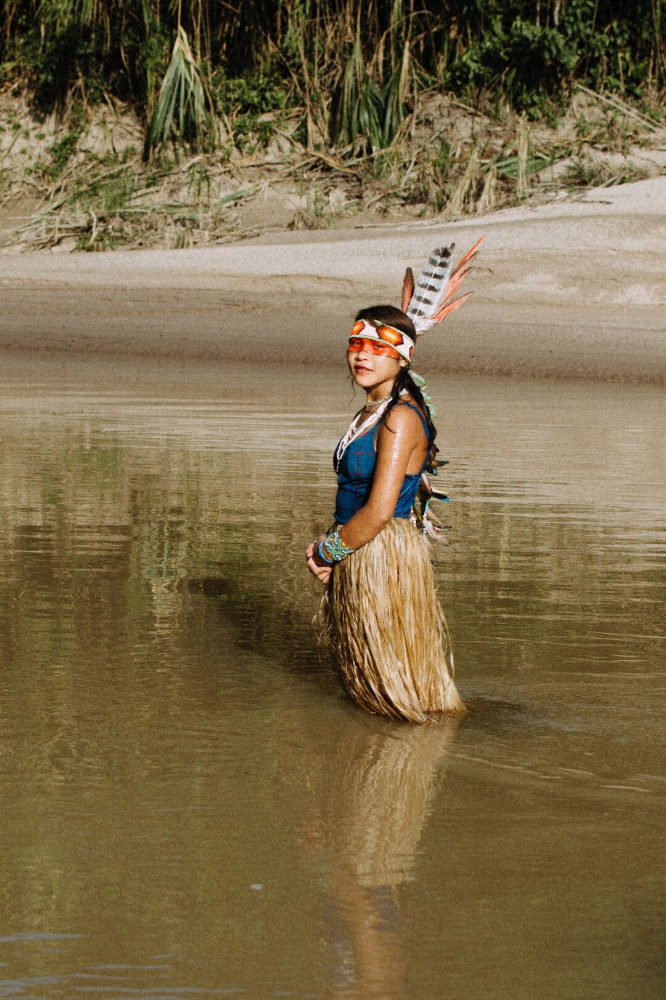
Bespoke Banter
Branded-content platform championing change-makers — amplifying voices and presenting important topics and solutions in a captivating, inspiring way.

Goals House
Global convening platform founded in Davos in 2019, bringing together leaders, activists, and innovators to develop partnerships and solutions to the world's biggest challenges.

Professor Thomas Crowther
Ecologist and founder of Crowther Lab and Restor; former professor of Global Ecosystem Ecology at ETH Zurich; founding chair of the advisory board for the UN Decade on Ecosystem Restoration; named a World Economic Forum Young Global Leader for his work on biodiversity protection and restoration.
NAT Stewards
Voices from the frontlines of conservation, climate and culture.
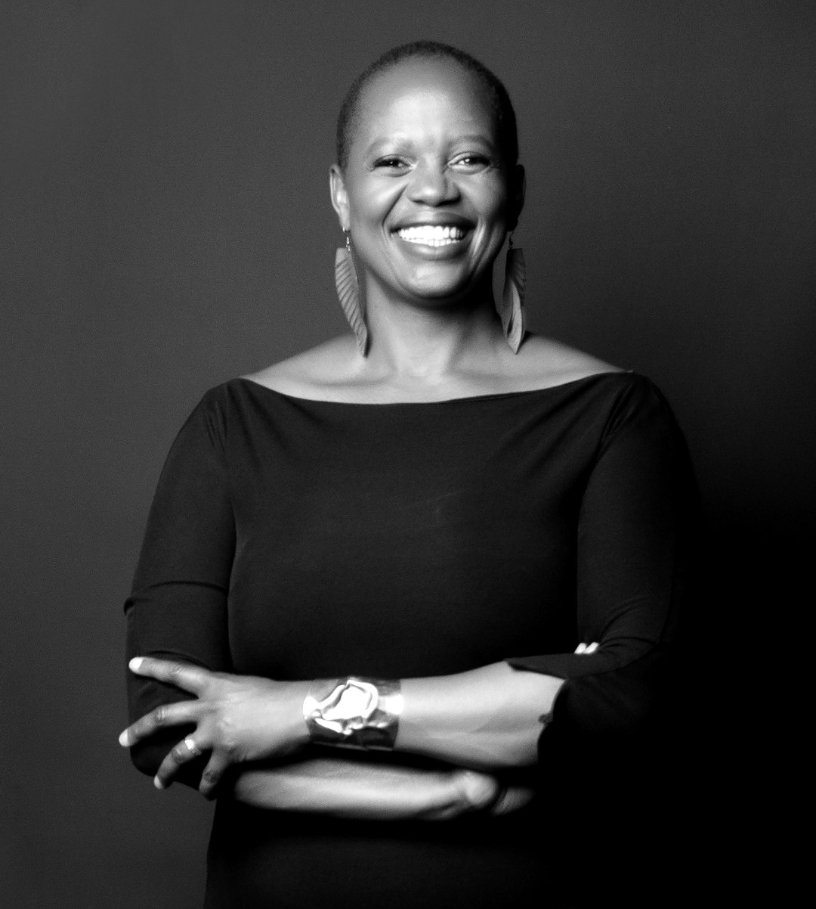
Nature is sacred: our first teacher and our oldest home. For generations, Indigenous and local communities have listened to her wisdom and lived in rhythm with her seasons. In partnering with THE NAT, I hope we rekindle that reverence and raise the support needed to invest in their guardianship and what has long sustained us.
Wanjira Mathai · Managing Director for Africa and Global Partnerships, World Resources Institute; former Chair of the Green Belt Movement (founded by her mother, Nobel Laureate Wangari Maathai).
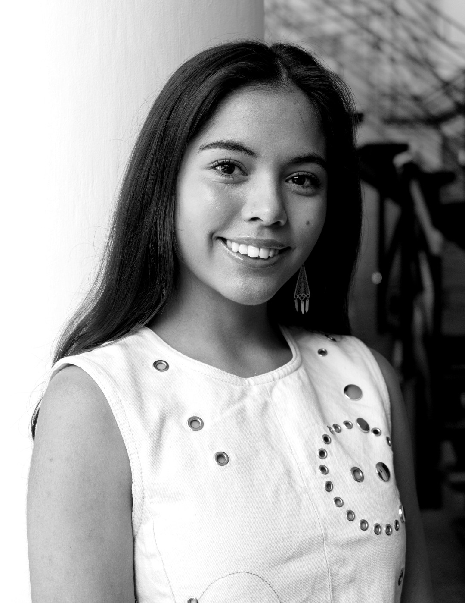
I'm excited for the climate community to finally acknowledge and embrace nature as one of the most important climate solutions. My elders have always said that the stewardship of nature is a collective duty, but it's also a gift… that of developing deep connection and purpose.
Xiye Bastida · Co-Founder and Executive Director, Re-Earth Initiative; Planetary Guardian; UN High-Level Champion Ambassador.
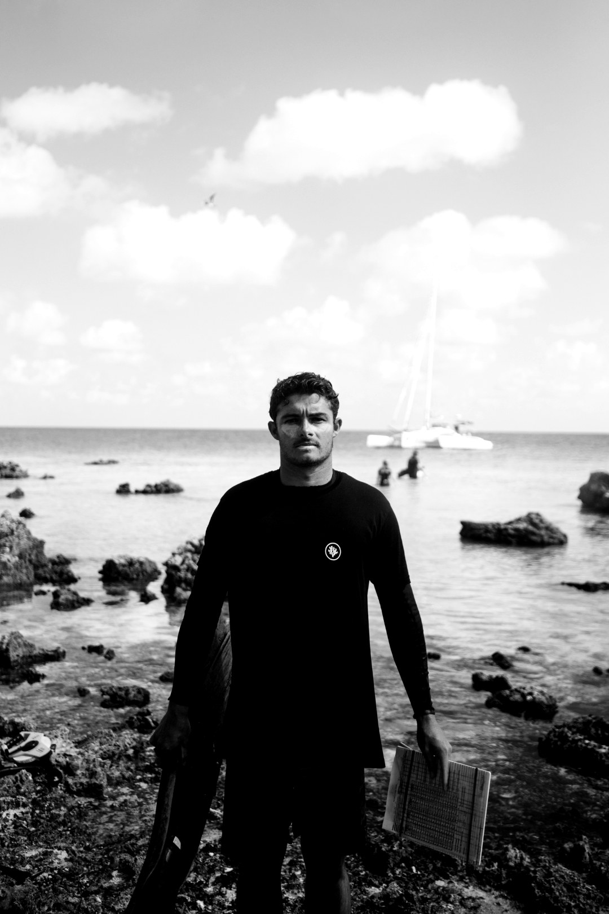
I'm thrilled to join the NAT initiative to help drive awareness and funding for nature-based solutions. This aligns perfectly with Coral Gardeners' mission to revolutionize ocean conservation by uniting creative forces and the influence of sectors like science, business, fashion, and culture to make a real impact for our blue planet.
Titouan Bernicot · Founder and CEO, Coral Gardeners.
Nature doesn't exist in isolation from culture – it inspires our best art, and provides the foundation for all creative expression. THE NAT represents a powerful recognition that those of us who have been given platforms in fashion, music and art have a responsibility to use our voices for the planet that sustains us all.
Sabrina Dhowre Elba · Actor, Model & Advocate; UN Goodwill Ambassador for IFAD; co-founder of S'Able Labs.
Even if you never have the chance to see or touch the ocean, the ocean touches you with every breath you take, every drop of water you drink, every bite you consume. Everyone, everywhere is inextricably connected to and utterly dependent upon the existence of the sea.
Sylvia Earle · Oceanographer and explorer; founder of Mission Blue; National Geographic Explorer at Large; first female chief scientist of NOAA; honored at THE NAT GALA 2025.
Thank you to all our supporters


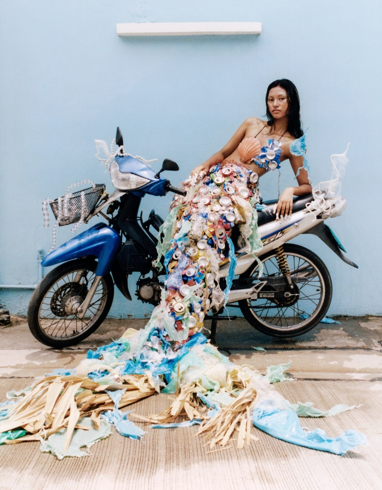

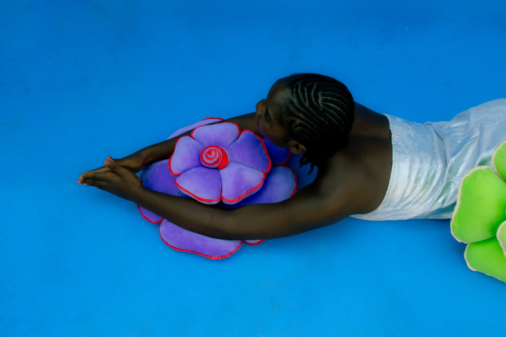
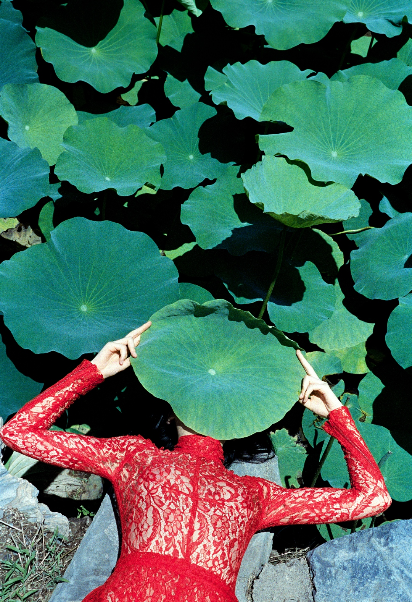


Join Our Journey
Whether you lead a brand, a fund, or a movement of your own — there's a place for you at THE NAT.
Zhang Ahuei
Photography — Gui Christ, Kent Andreasen, Elliott Verdier, Kin Coedel, Kyle Weeks, Lee-Ann Olwage, Lucia Alonso, Mauricio Holc, Zhang Ahuei, Fee Gloria Gronemeyer, Delali Ayivi, Liu Yi